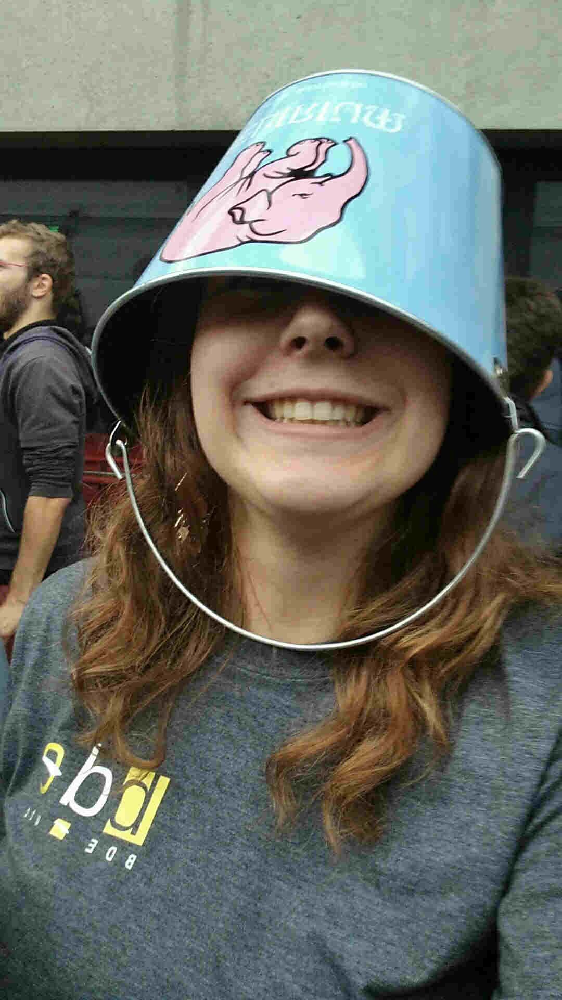

Une vie de découverte
Ingénieure informatique de l'UTC (Compiègne), passionnée de voyage, autostop et baroudage en tout genre... Essaye d'inscrire mes actions dans une démarche durable, sobre et éco-responsable.

Bienvenue sur mon petit site statique (site moins énergivore dans une démarche d'éco-conception), inspirée par les démarche de Gauthier Roussilhe et du Low Tech Magazine